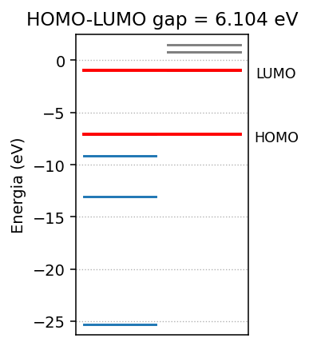
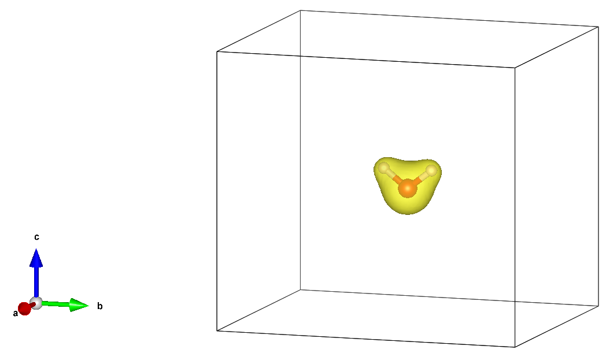
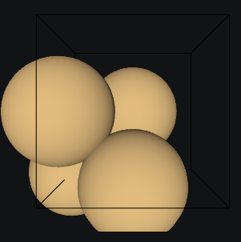
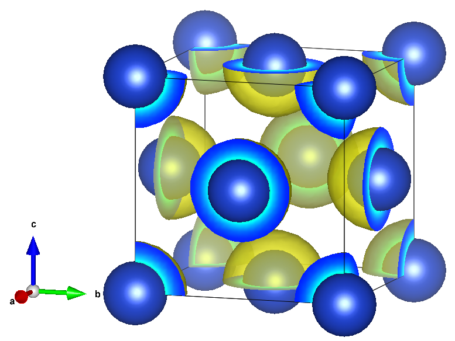

14 VASP
Nesse capítulo vamos apresentar o pacote VASP (Vienna Ab initio Simulation Package), que é um software comercial amplamente utilizado para cálculos de estrutura eletrônica e simulações de materiais. O VASP é baseado em métodos de DFT (Density Functional Theory) e oferece uma ampla gama de funcionalidades para cálculos de propriedades eletrônicas, estruturais e dinâmicas de materiais.
14.1 Instalação no Linux
Para instalar o VASP no Linux, siga os passos abaixo:
Obtenha uma licença do VASP: O VASP é um software comercial, portanto, você precisará adquirir uma licença para usá-lo. Visite o site oficial do VASP (https://www.vasp.at/) para obter informações sobre como adquirir uma licença.
Baixe o código-fonte do VASP: Após obter a licença, você poderá baixar o código-fonte do VASP a partir do site oficial. Certifique-se de baixar a versão compatível com o seu sistema operacional.
Instale as dependências necessárias: Antes de compilar o VASP, você precisará instalar algumas dependências, como compiladores Fortran e C, bibliotecas MPI e BLAS/LAPACK.
Você pode instalar essas dependências usando o gerenciador de pacotes do Ubuntu:
sudo apt update
sudo apt install rsync make build-essential g++ gfortran libopenblas-dev libopenmpi-dev libscalapack-openmpi-dev libfftw3-dev libhdf5-openmpi-devou no caso do Fedora:
sudo dnf install rsync gcc gcc-c++ gcc-gfortran openblas-devel openmpi-devel scalapack-openmpi-devel fftw-devel hdf5-openmpi-devele modifique o arquivo ~/.bashrc para incluir as variáveis de ambiente do OpenMPI:
export PATH=/usr/lib64/openmpi/bin:$PATH
export LD_LIBRARY_PATH=/usr/lib64/openmpi/lib:$LD_LIBRARY_PATHe recarregue o arquivo ~/.bashrc:
source ~/.bashrc- Compile o VASP: Navegue até o diretório onde você decompactou o código-fonte do VASP e siga as seguintes instruções de compilação.
4.1. Crie um arquivo de configuração makefile.include com as opções de compilação apropriadas para o seu sistema. Você pode encontrar exemplos de arquivos de configuração no diretório arch do código-fonte do VASP.
cp arch/makefile.include.gnu_omp makefile.include4.2. Dentro do arquivo makefile.include, você pode ajustar as opções de compilação, como o compilador Fortran, flags de otimização e bibliotecas a serem usadas.
- Modifique a versão do compilador GCC que você deve usar para compilar o VASP. Nesse caso iremos modificar a linha
CFLAGS_LIBpara usar a versãognu17do compilador GCC:
CFLAGS_LIB = -O -std=gnu17- Comente a linha
OPENBLAS_ROOTe adicione a linhaBLASPACKcomo abaixo:
# BLAS and LAPACK (mandatory)
#OPENBLAS_ROOT ?= /path/to/your/openblas/installation
BLASPACK = -lopenblas- Comente a linha
SCALAPACK_ROOTe adicione a linhaSCALAPACKcomo abaixo:
# scaLAPACK (mandatory)
#SCALAPACK_ROOT ?= /path/to/your/scalapack/installation
SCALAPACK = -lscalapack- Comente a linha
FFTW_ROOTe adicione a linhaLLIBSeINCScomo abaixo:
# FFTW (mandatory)
#FFTW_ROOT ?= /path/to/your/fftw/installation
LLIBS += -lfftw3 -lfftw3_omp
INCS += -I/usr/include- Adicione as seguintes linhas para habilitar o suporte ao HDF5 (opcional, mas fortemente recomendado):
# HDF5-support (optional but strongly recommended)
CPP_OPTIONS+= -DVASP_HDF5
#HDF5_ROOT ?= /path/to/your/hdf5/installation
LLIBS += -lhdf5_fortran
INCS += -I/usr/lib64/gfortran/modules/openmpi/Salve o arquivo makefile.include após fazer as alterações e compile o VASP executando o comando
make DEPS=1 -jConferindo instalação: Após a compilação bem-sucedida, você pode conferir se o executável do VASP foi gerado corretamente no diretório
bindo código-fonte.Configure o ambiente: Para facilitar a execução do VASP, você pode adicionar o diretório
bindo código-fonte do VASP ao seu PATH. Adicione a seguinte linha ao seu arquivo~/.bashrc:
export PATH=/path/to/vasp/bin:$PATH- Instalando pseudopotenciais: O VASP utiliza pseudopotenciais para representar os núcleos dos átomos. Você precisará baixar os pseudopotenciais apropriados para os elementos que deseja simular. Os pseudopotenciais podem ser encontrados no site oficial do VASP ou em repositórios de terceiros.
- Crie uma pasta
ppdentro da pasta/path/to/vasp
mkdir -p pp- Copie os arquivos de pseudopotenciais para essa pasta
cp ~/Downloads/potpaw_LDA.64.tgz pp/. && cp ~/Downloads/potpaw_PBE.64.tgz pp/.- Entre na pasta
ppe crie as seguintes pastas
cd pp && mkdir potpaw potpaw_PBE- Descompacte o arquivo
potpaw_LDA.64.tgzpara dentro da pastapotpaw
tar -xvzf potpaw_LDA.64.tgz -C potpaw- Descompacte o arquivo
potpaw_PBE.64.tgzpara dentro da pastapotpaw_PBE
tar -xvzf potpaw_PBE.64.tgz -C potpaw_PBEAgora você possui os arquivos de pseudopotenciais instalados nessas pastas.
14.2 Instalação no Windows 11
Para instalar o VASP no Windows 11, você pode usar o Windows Subsystem for Linux (WSL) para criar um ambiente Linux dentro do Windows. Siga os passos abaixo: 1. Habilite o WSL: Abra o PowerShell como administrador e execute o seguinte comando para habilitar o WSL:
wsl --installInstale uma distribuição Linux: Após habilitar o WSL, você precisará instalar uma distribuição Linux, como Ubuntu 24, a partir da Microsoft Store.
Siga os passos de instalação no Ubuntu 24: Após instalar a distribuição Linux, abra o terminal do WSL e siga os mesmos passos de instalação descritos na seção “Instalação no Ubuntu 24” para instalar o VASP dentro do ambiente Linux.
14.3 Instalação do ASE
O ASE (Atomic Simulation Environment) é uma biblioteca Python que facilita a configuração, execução e análise de simulações de materiais. Ele pode ser usado em conjunto com o VASP para automatizar tarefas e simplificar o fluxo de trabalho.
Para instalar o ASE (Atomic Simulation Environment), você pode usar o gerenciador de pacotes pip. Execute o seguinte comando no terminal:
pip install ase14.4 Configuração do ASE com o VASP
Para configurar o ASE para trabalhar com o VASP, siga os passos abaixo: 1. Verifique a instalação do ASE: Certifique-se de que o ASE foi instalado corretamente executando o seguinte comando no terminal:
python -c "import ase; print(ase.__version__)"- Configure o caminho do VASP: O ASE precisa saber onde o executável do VASP está localizado. Você pode definir a variável de ambiente
ASE_VASP_COMMANDpara apontar para o executável do VASP. No Linux, você pode adicionar a seguinte linha ao seu arquivo~/.bashrc:
export ASE_VASP_COMMAND="mpirun -np 1 vasp_std"- Especificando pasta com pseudopotenciais: O ASE precisa saber onde os arquivos de pseudopotenciais do VASP estão localizados. Você pode definir a variável de ambiente
VASP_PP_PATHpara apontar para o diretório que contém os pseudopotenciais. No Linux, você pode adicionar a seguinte linha ao seu arquivo~/.bashrc:
export VASP_PP_PATH =/path/to/vasp/pp14.5 Criando uma molécula com o ASE
Os exemplos contidos nesta seção podem ser executados em um ambiente de notebook, como o Jupyter Notebook. Para executar este notebook no seu computador, você pode clicar no link: Abrir no GitHub
No ASE, você pode criar uma molécula usando a classe Atoms. A seguir, apresentamos um exemplo de como criar uma molécula de água (H2O):
from ase import Atoms, Atom
h2omol = Atoms([Atom('O', [0, 0, 0]),
Atom('H', [0.0, -0.760265, 0.588373]),
Atom('H', [0.0, 0.760265, 0.588373])])que pode ser visualizada usando o método view do ASE:
from ase.visualize import view
view(h2omol)cujo output será uma janela interativa mostrando a molécula de água em 3D, permitindo que você gire, amplie e explore a estrutura da molécula.
Outra opção é usar o visualizador x3d do ASE, que permite visualizar a molécula em um navegador web. Para isso, você pode executar o seguinte comando:
view(h2omol, viewer='x3d')14.6 Cálculos Auto-Consistentes de Energia no VASP com o ASE
No caso de moléculas devemos definir a célula de simulação para evitar interações entre imagens periódicas da molécula. Por exemplo, podemos definir uma célula cúbica que tenha um vácuo de 4 Å em torno da molécula de água com condição de contorno periódico:
h2omol.center(vacuum=4.0) # caixa com 4 Angstroms de vácuo
h2omol.pbc = True # condição de contorno periódicaE podemos importar a calculadora do VASP do ASE e definir os parâmetros de cálculo:
from ase.calculators.vasp import Vasp
calc = Vasp(xc='PBE', # funcional
encut=350, # safe default for PAW-PBE sets
kpts=[1, 1, 1],gamma=True, # Somente pontos Gamma em Fourier
ibrion=-1, # Calcula SCF
directory='water' # pasta em que os cálculos serão armazenados
)E devemos anexar a calculadora à molécula de água:
h2omol.calc = calcA energia total da molécula de água pode ser obtida com o método get_potential_energy():
E_h2o = h2omol.get_potential_energy()
print(f'Energia total da molécula de água: {E_h2o:.3f} eV')cujo o output será
Energia total da molécula de água: -14.215 eV14.7 Orbitais moleculares e Densidade Eletrônica
14.7.1 Orbitais moleculares
Podemos determinar os orbitais moleculares da molécula de água usando o VASP e o ASE. Para isso, podemos usar a função calc.get_eigenvalues() para obter os valores próprios (energias) dos orbitais moleculares. Por exemplo:
eigenvalues = h2omol.calc.get_eigenvalues()
print("Valores próprios (energias) dos orbitais moleculares:")
for i, energy in enumerate(eigenvalues):
print(f'Orbital {i+1}: {energy:.3f} eV')cujo o output será
Valores próprios (energias) dos orbitais moleculares:
Orbital 1: -25.308 eV
Orbital 2: -13.063 eV
Orbital 3: -9.152 eV
Orbital 4: -7.093 eV
Orbital 5: -0.989 eV
Orbital 6: 0.791 eV
Orbital 7: 0.824 eV
Orbital 8: 1.509 eVUsando a função calc.get_occupation_numbers(), podemos obter os números de ocupação dos orbitais moleculares:
occupations = h2omol.calc.get_occupation_numbers()
print("Números de ocupação dos orbitais moleculares:")
for i, occ in enumerate(occupations):
print(f'Orbital {i+1}: {occ:.0f}')cujo o output será
Números de ocupação dos orbitais moleculares:
Orbital 1: 2
Orbital 2: 2
Orbital 3: 2
Orbital 4: 2
Orbital 5: 0
Orbital 6: 0
Orbital 7: 0
Orbital 8: 0A função calc.get_homo_lumo() permite que determinemos as energias dos orbitais HOMO (Highest Occupied Molecular Orbital) e LUMO (Lowest Unoccupied Molecular Orbital):
homo, lumo = h2omol.calc.get_homo_lumo()
gap = (lumo - homo)
print(f'HOMO: {homo:.3f} eV')
print(f'LUMO: {lumo:.3f} eV')
print(f"Diferença: {gap:.3f} eV")cujo o output será
HOMO: -7.093 eV
LUMO: -0.989 eV
Diferença: 6.104 eVDe forma mais elegante podemos visualizar
import numpy as np
import matplotlib.pyplot as plt
eigenvalues = h2omol.calc.get_eigenvalues()
occupations = h2omol.calc.get_occupation_numbers()
homo, lumo = h2omol.calc.get_homo_lumo()
gap = (lumo - homo)
# Sort for a clean plot
order = np.argsort(eigenvalues)
eigenvalues, occupations = eigenvalues[order], occupations[order]
# Split occupied / unoccupied
occ_mask = occupations > 0.5
E_occ = eigenvalues[occ_mask]
E_unocc = eigenvalues[~occ_mask]
# --- plotting ---
plt.figure(figsize=(3, 3.2), dpi=140)
# Sticks for occupied and unoccupied states
for E in E_occ:
plt.plot([0, 0.6], [E, E],color='C0')
for E in E_unocc:
plt.plot([0.7, 1.3], [E, E],color='grey')
# Highlight HOMO / LUMO
plt.plot([0, 1.3],[homo, homo],color='red', linewidth=2)
plt.plot([0, 1.3],[lumo, lumo],color='red', linewidth=2)
# Annotate
plt.text(1.6,homo-1, 'HOMO', ha='center', va='bottom', fontsize=9)
plt.text(1.6, lumo-1, 'LUMO', ha='center', va='bottom', fontsize=9)
plt.title(f'HOMO-LUMO gap = {gap:.3f} eV')
plt.ylabel('Energia (eV)')
plt.xticks([]) # hide y-axis (pure spectrum)
plt.ylim(min(eigenvalues)-1, max(eigenvalues)+1)
plt.grid(True, axis='y', linestyle=':', linewidth=0.7)
plt.tight_layout()cujo output será uma figura do tipo

14.7.2 Densidade eletrônica
A densidade eletrônica calculada pelo VASP está contida em um arquivo denominado CHGCAR. Esse arquivo está entre os arquivos na pasta especificada no calc que denominamos water. Ele pode ser visualizado com programas de visualização de densidade eletrônica, como VESTA.

14.8 Criando um Sólido cristalino com ASE
Criando um cristal de cobre (Cu) usando o modulo bulk do ASE na forma
from ase.build import bulk
a = 3.5
Cu_crystal = bulk("Cu", crystalstructure="fcc", a=a, cubic=True)
print(Cu_crystal)
print("Cell:", Cu_crystal.get_cell())
print("Positions:\n", Cu_crystal.get_positions())cujo output será
Atoms(symbols='Cu4', pbc=True, cell=[3.5, 3.5, 3.5])
Cell: Cell([3.5, 3.5, 3.5])
Positions:
[[0. 0. 0. ]
[0. 1.75 1.75]
[1.75 0. 1.75]
[1.75 1.75 0. ]]e visualizando com o método view do ASE:
from ase.visualize import view
view(Cu_crystal) temos

14.9 Calculando a energia total de um sólido cristalino com o VASP e o ASE
Criando a calculadora do VASP com o ASE:
calc = Vasp(directory='Cu',
xc='PBE',
kpts=[6, 6, 6], # specifies k-points
encut=350,
)e anexando a calculadora ao cristal de cobre:
Cu_crystal.calc = calcpodemos calcular a energia total do cristal de cobre com o método get_potential_energy():
E_Cu = Cu_crystal.get_potential_energy()
print(f'Energia total do cristal de cobre: {E_Cu:.3f} eV')cujo output será
Energia total do cristal de cobre: -14.603 eVA energia por átomo do cristal de cobre pode ser obtida dividindo a energia total pelo número de átomos no cristal:
E_per_atom = E_Cu / len(Cu_crystal)
print(f'Energia por átomo do cristal de cobre: {E_per_atom:.3f} eV')cujo output será
Energia por átomo do cristal de cobre: -3.651 eV14.10 Densidade eletrônica de um sólido cristalino
Podemos visualizar a densidade eletrônica do cristal de cobre usando o arquivo CHGCAR gerado pelo VASP. Para isso, podemos usar o programa VESTA para abrir o arquivo CHGCAR e visualizar a densidade eletrônica em 3D.
